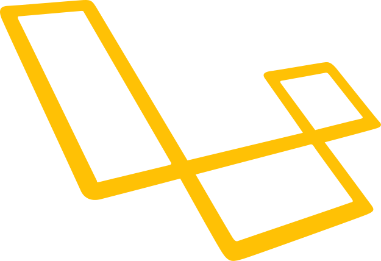

 Introducción al despliegue de aplicaciones web¶
¿Qué es el despliegue?¶
El despliegue de una aplicación web es el proceso mediante el cual se pone un sistema en funcionamiento para que esté disponible a los usuarios. Normalmente, este proceso implica mover una aplicación desde un entorno de desarrollo (local) a un servidor accesible desde Internet.
Este proceso puede involucrar:
- Transferencia de archivos.
- Configuración de bases de datos.
- Establecimiento de permisos.
- Configuración del servidor web.
Tipos de despliegue: manual, automático y continuo (CI/CD)¶
El tipo de despliegue depende principalmente de los recursos disponibles y la accesibilidad del servidor. Hay Hostings que pondrán a nuestra disposición un panel de control para gestionar el despliegue, mientras que en otros casos tendremos que hacerlo manualmente o mediante scripts.
Despliegue manual¶
No automatizado, donde se realizan acciones manualmente. Principalmete:
- Subir archivos (FTP, SCP).
- Ejecutar comandos directamente en el servidor.
El método más común en este tipo de despliegue es el uso de FTP o SSH para transferir archivos y ejecutar comandos. Una vez los archivos están transferidos y la configuración está hecha, el sistema debería estar operativo.
Despliegue automático¶
Mediante scripts o herramientas que automatizan parte del proceso. Por ejemplo: scripts bash, Ansible.
Ventajas:
- Menos propenso a errores humanos.
- Más rápido y eficiente.
- Repetible y consistente.
Desventajas:
- Requiere conocimientos técnicos para configurar.
- Puede ser complejo de mantener.
Despliegue continuo (CI/CD)¶
El despliegue continuo es parte de una estrategia DevOps. Se basa en integrar cambios de forma frecuente y automatizar tests y despliegues. Herramientas comunes: GitHub Actions, GitLab CI, Jenkins.
CI/CD
CI/CD = Continuous Integration / Continuous Deployment (or Delivery)
Es decir, Integración Continua y Despliegue (o Entrega) Continua.
- CI – Continuous Integration (Integración Continua)
Significa que los desarrolladores integran sus cambios de código frecuentemente en un repositorio común (como GitHub o GitLab). Cada vez que alguien sube código, un sistema automático:
- Ejecuta pruebas unitarias y de integración.
- Comprueba que el código se compila correctamente.
- Detecta errores o conflictos antes de que lleguen a producción.
Objetivo: evitar que el código “rompa” la aplicación principal y mantenerla siempre funcional. 2. CD – Continuous Deployment / Continuous Delivery
Hay dos interpretaciones del segundo “CD” (según el nivel de automatización):
Continuous Delivery (Entrega Continua):
- El sistema deja la aplicación lista para desplegar, pero el despliegue final se hace manualmente (por ejemplo, con aprobación de un responsable).
Continuous Deployment (Despliegue Continuo):
- Todo el proceso es completamente automático: desde que se aprueba el código, hasta que se despliega en producción sin intervención humana.
Objetivo: poder entregar nuevas versiones rápido, seguro y sin interrupciones.
En resumen¶
| Sigla | Significado | En español | Qué hace |
|---|---|---|---|
| CI | Continuous Integration | Integración continua | Automatiza pruebas y validaciones del código. |
| CD | Continuous Delivery | Entrega continua | Prepara versiones listas para desplegar. |
| CD | Continuous Deployment | Despliegue continuo | Despliega automáticamente en producción. |
Ejemplo práctico:
- Subes código a GitHub →
- GitHub Actions ejecuta tests automáticamente (CI) →
- Si todo va bien, el código se despliega en el servidor (CD).
Entornos: desarrollo, staging, producción¶
Normalmente, dependiendo del proyecto, tendremos varios entornos para gestionar el ciclo de vida de la aplicación:
- Desarrollo: donde los programadores escriben y prueban el código.
- Staging (preproducción): entorno intermedio para pruebas antes de subir a producción.
- Producción: sistema en funcionamiento accesible por los usuarios finales.
Aunque no todos los proyectos usan un entorno de staging, es muy recomendable para proyectos medianos y grandes. Permite detectar errores antes de que afecten a los usuarios reales.
Cada entorno puede tener su configuración y base de datos distinta.
Requisitos del servidor para desplegar Laravel¶
Tipos de servidores
Antes de hablar de requisitos, es importante entender los tipos de servidores donde podemos desplegar Laravel:
- Servidores compartidos
- Servidores dedicados (VPS)
- Plataformas como servicio (PaaS)
Servidores compartidos¶
- Definición: Es un tipo de alojamiento en el que varios sitios web comparten los mismos recursos de un único servidor físico (CPU, memoria, espacio en disco, etc.).
-
Ventajas:
-
Económico: es la opción más barata.
- Configuración sencilla: el proveedor gestiona casi todo (actualizaciones, seguridad, etc.).
- Ideal para proyectos pequeños o de baja carga.
-
Desventajas:
-
Recursos limitados: si otro sitio en el mismo servidor consume muchos recursos, tu aplicación puede verse afectada.
- Menor control: no puedes modificar configuraciones del servidor a bajo nivel.
- Posibles problemas de seguridad: compartes el entorno con otros usuarios.
Más baratos pero con limitaciones en configuración y permisos. Laravel puede funcionar si se estructura correctamente. Estos servidores suelen ofrecer un panel de control como cPanel o Plesk. Pero dependiendo del plan contratado nos podemos enconrrar con limitaciones como:
- Plan gratuito: No acceso a SSH, FTP limitado, sin acceso a Composer.
- Plan de pago: Acceso a SSH, FTP completo, acceso a Composer.
Como veremos más adelante, aunque utilicemos el plan gratuito, podemos desplegar Laravel, pero con ciertas limitaciones y dificultades que con los planes de pago no tendríamos.
VPS (Virtual Private Server)¶
- Definición: Es un servidor físico entero reservado exclusivamente para tu aplicación o sitio web.
-
Ventajas:
-
Máximo rendimiento: todos los recursos están dedicados a tu proyecto.
- Control total: puedes instalar y configurar el software a tu medida.
- Mayor seguridad: no compartes el servidor con otros usuarios.
-
Desventajas:
-
Coste elevado.
- Mayor responsabilidad: necesitas conocimientos técnicos para su configuración y mantenimiento (aunque puedes contratar soporte).
- Ideal para: aplicaciones con mucho tráfico, requisitos especiales de configuración o que manejan información sensible.
- Ejemplo típico: servicios como OVH, Hetzner o servidores bare-metal de DigitalOcean.
En estos servidores, Laravel puede desplegarse con total libertad, ya que tenemos acceso completo al sistema operativo y podemos instalar todas las dependencias necesarias.
PaaS (Platform as a Service)¶
- Definición: PaaS es un modelo de computación en la nube que proporciona una plataforma lista para usar donde puedes desarrollar, ejecutar y desplegar aplicaciones sin preocuparte por la infraestructura subyacente.
-
Ejemplos de servicios PaaS:
-
Heroku
- Laravel Forge (gestiona servidores, aunque no es PaaS puro)
- Google App Engine
- Railway
- Render
-
Ventajas:
-
No gestionas servidores directamente.
- Escalabilidad automática.
- Despliegue simplificado con git push.
- Suele tener integraciones listas (bases de datos, cache, colas, etc.).
-
Desventajas:
-
Menor control del entorno.
- Puede ser más caro a gran escala.
- Dependencia del proveedor.
- Ideal para: desarrollo ágil y rápido despliegue, especialmente en equipos pequeños o startups.
Comparación: Compartido vs Dedicado vs PaaS¶
| Característica | Compartido | Dedicado | PaaS |
|---|---|---|---|
| Nivel de control | Bajo | Alto | Medio (no gestionas la infraestructura) |
| Mantenimiento | Proveedor | Usuario | Proveedor |
| Coste inicial | Bajo | Alto | Medio (depende del proveedor) |
| Escalabilidad | Limitada | Alta (manual) | Alta (automática en muchos casos) |
| Curva de aprendizaje | Muy baja | Alta | Media |
| Ideal para | Proyectos pequeños | Grandes con control total | Desarrollo ágil y rápido despliegue |
| Ejemplos | Hostinger, GoDaddy | OVH, Hetzner | Heroku, Render, Railway |
Requisitos y particularidades del despliegue en Laravel¶
Requisitos específicos
En este punto estamos hablando de generalidades del despliegue centrandonos en Laravel. Pero en cada caso tenemos que adaptar a las particularidades del servidor y del proyecto. tamién hemos puesto unas versiones de PHP y MySQL que son las mínimas recomendadas, pero siempre es mejor usar las últimas versiones estables para aprovechar mejoras de rendimiento y seguridad. Hay que revisar la documetnación oficial de Laravel o del Framework que estemos usando para ver los requisitos específicos.
1. Servidor Compartido¶
Lo que debe tener (o soportar):
- PHP ≥ 8.1 (Laravel 10 lo requiere como mínimo)
- Extensiones PHP necesarias:
openssl,pdo,mbstring,tokenizer,xml,ctype,json,bcmath,fileinfo,curl- Composer (algunos hosts permiten usarlo vía terminal o ya lo incluyen)
- Acceso SSH (opcional pero muy recomendable)
- Base de datos MySQL ≥ 5.7 o MariaDB ≥ 10.3
- Soporte para Laravel: muchos hostings compartidos permiten Laravel, pero otros tienen restricciones o versiones antiguas de PHP
Observaciones:
- Idealmente, que tenga soporte para archivos
.htaccesssi se usa Apache. - El entorno es limitado, por lo que puedes encontrar restricciones para usar colas, websockets o tareas programadas (cronjobs).
2. Servidor Dedicado¶
Lo que debes instalar o configurar:
- Sistema operativo (Ubuntu 22.04 o similar es muy común)
- PHP ≥ 8.1 y las mismas extensiones listadas arriba
- Composer instalado globalmente
- MySQL o MariaDB: debes instalarlo tú mismo
- Servidor web: Apache o Nginx (Laravel funciona bien con ambos)
- Gestión de procesos: como Supervisor si usas colas
- Certificados SSL: con Let’s Encrypt o similar
- Firewall, seguridad, backups: todo debe ser gestionado por ti (o automatizado)
Observaciones:
- Control total, pero también responsabilidad total.
- Recomendado usar herramientas como Laravel Forge para automatizar la configuración.
3. PaaS (Platform as a Service)¶
Lo que debe ofrecer el proveedor (la mayoría lo hace):
- Imagen de entorno con PHP ≥ 8.1 y extensiones comunes
- Soporte para Composer y scripts de construcción (
composer install) - Acceso a MySQL gestionado o la opción de conectar a uno externo
- Variables de entorno fácilmente configurables (
.env) - Soporte para artisan commands, tareas programadas y colas
- Despliegue con git o pipelines CI/CD
Ejemplos de proveedores que cumplen esto:
- Heroku (usando addons para MySQL)
- Render (soporta PHP y MySQL directamente)
- Railway (muy amigable para Laravel)
- Laravel Vapor (usa AWS y está optimizado para Laravel)
Resumen Comparativo¶
| Requisito | Compartido | Dedicado | PaaS |
|---|---|---|---|
| PHP ≥ 8.1 | Sí, si es moderno | Tú lo instalas | Preinstalado |
| Composer | A veces incluido | Lo instalas tú | Preconfigurado |
| MySQL / MariaDB | Preinstalado | Lo instalas tú | Integrado o externo |
| Extensiones PHP necesarias | Ya configuradas | Tú las habilitas | Generalmente incluidas |
| Soporte para tareas de Laravel | Limitado | Completo | Completo (con límites según el proveedor) |
| Acceso SSH / CLI | Limitado | Completo | Limitado o virtual |
Particularidades de Laravel¶
Laravel es un framework PHP que sigue el patrón MVC (Modelo-Vista-Controlador) y tiene una estructura de carpetas bien definida. Algunas particularidades importantes al desplegar Laravel son:
-
Estructura de carpetas: Laravel tiene una estructura de carpetas que debe respetarse para que el framework funcione correctamente. Las carpetas más importantes son:
-
app/: Contiene la lógica de la aplicación. config/: Archivos de configuración.database/: Migraciones y seeders.public/: Punto de entrada público (debe ser el directorio raíz del servidor).resources/: Vistas, traducciones y assets.routes/: Definición de rutas.storage/: Logs, caché y archivos temporales.- Configuración del servidor web: El servidor web debe apuntar a la carpeta
public/de Laravel. Esto es crucial para que las rutas y los assets se sirvan correctamente. - Permisos de carpetas: Las carpetas
storage/ybootstrap/cache/deben tener permisos de escritura para que Laravel pueda funcionar correctamente. Normalmente, se recomienda establecer permisos 775 o 777 dependiendo del entorno. - Variables de entorno: Laravel utiliza un archivo
.envpara gestionar la configuración sensible, como las credenciales de la base de datos. Este archivo no debe subirse al repositorio y debe ser configurado en cada entorno de despliegue (puede tener usuarios/contraseñas locales). - Comandos Artisan: Laravel incluye una herramienta de línea de comandos llamada Artisan, que permite ejecutar tareas comunes como migraciones, limpieza de caché, y más. Es recomendable ejecutar
php artisan migrateyphp artisan config:cachedespués del despliegue. - Dependencias: Laravel utiliza Composer para gestionar sus dependencias. Es importante ejecutar
composer installen el entorno de producción para asegurarse de que todas las dependencias estén instaladas correctamente. - Cache y optimización: Laravel permite optimizar la aplicación para producción con comandos como
php artisan optimize,php artisan route:cache, yphp artisan config:cache. Esto mejora el rendimiento al reducir el tiempo de carga de las rutas y la configuración.
Laravel y PaaS¶
Laravel funciona especialmente bien en entornos PaaS, por varias razones:
- Despliegue ágil: Muchos PaaS permiten desplegar con un simple
git push, ideal para equipos de desarrollo. -
Integración con Forge / Vapor:
-
Laravel Forge: aunque no es PaaS en sí, automatiza la gestión de servidores en plataformas como DigitalOcean, AWS o Linode.
- Laravel Vapor: es una solución PaaS serverless para AWS, diseñada específicamente para Laravel, que elimina totalmente la necesidad de gestionar servidores.
- Entorno estandarizado: Laravel requiere PHP, Composer, y ciertas extensiones, lo cual muchos PaaS ya tienen configurado por defecto.
Conclusión: Para muchos equipos modernos, especialmente los que priorizan velocidad de desarrollo y despliegue, usar PaaS con Laravel puede ser una excelente opción.
Gestión de dependencias y configuración (.env)¶
Laravel usa Composer para gestionar las dependencias PHP.
En producción:
composer install --optimize-autoloader --no-dev
Esto instala las dependencias necesarias sin incluir las de desarrollo, optimizando el autoloader para mejorar el rendimiento. Estas dependencias se definen en el archivo composer.json del proyecto y se instalan en la carpeta vendor/.
El archivo .env contiene la configuración sensible: claves, base de datos, entorno, etc. Nunca debe subirse al repositorio ya que contiene información sensible como usuarios y contraseñas. Pero tenemos que asegurarnos de que cada entorno tenga su propio archivo .env configurado correctamente.
Pruebas antes y después del despliegue¶
Antes de desplegar:
- Ejecutar tests con PHPUnit.
- Verificar que la aplicación funcione en local o staging.
Después del despliegue:
- Verificar logs (
storage/logs/laravel.log). - Probar funcionalidades clave.
- Tener backup previo de archivos y base de datos.
Estrategias para mantener la estructura de Laravel en entornos restrictivos¶
Nos podemos encontrar con servidores donde no podemos respetar la estructura de Laravel, especialmente en servidores compartidos o con restricciones de acceso. Por ejempo, hay servidores que no permiten la instalación de ficheros fuera de la carpeta public_html o www. Laravel, por defecto, espera que la carpeta public/ sea el punto de entrada, y el resto de carpetas no denerían ser accesibles públicamente (seguridad). En estos casos, debemos adaptar la estructura o usar técnicas alternativas para mantener la seguridad y funcionalidad de la aplicación. En el siguiente tema veremos como instalar Laravel en un servidor compartido modificando la estructura de carpetas.
En este tipo de entornos (hostil) debemos:
- Mover archivos
public/a la raíz y reconfigurar rutas si es necesarios. - Copiar toda la estructura de Laravel en la carpeta
public_htmlowww. - Usar
index.phppersonalizado, hay que modificar las rutas de autoload y bootstrap para que apunten a la ubicación correcta de los archivos de Laravel. - Asegurar que las rutas a
vendor/ostorage/no sean accesibles públicamente. Podemos usar el archivo.htaccesspara denegar el acceso a estas carpetas.
Preparación del proyecto para despliegue¶
En un entorno de producción amigable (VPS, PaaS), la preparación del proyecto es más sencilla. Pero en un entorno hostil (servidor compartido), debemos tener en cuenta las limitaciones y adaptar el proceso.
Pasos comunes:
- Subir archivos.
- Ejecutar
composer install. - Configurar
.env. - Ejecutar migraciones:
php artisan migrate
php artisan config:cache
php artisan route:cache
chmod -R 775 storage bootstrap/cache
En los entornos hostiles (no tengamos acceso a línea de comando y no podamos modificar la carpeta de entrada a /public), debemos adaptar los pasos.
Es posible que no podamos ejecutar composer install directamente en el servidor. Tampoco podemos ejecutar comandos Artisan directamente si no tenemos acceso SSH. Es recomendable preparar el proyecto en local y subirlo ya preparado, no es lo ideal, tendremos que aplicar parches y medidas de seguridad adicionales. Pero es una opción viable. Como he dicho anteriormente, en el siguiente tema veremos un ejemplo práctico de despliegue en un servidor compartido, donde adaptaremos la estructura de Laravel para que funcione correctamente.
Normalmente las licencias gratuitos suelen poner muchos problemas para instalar aplicaciones complejas como Laravel, incluso en algunos casos direntamente no es posible. Lo ideal es usar un plan de pago, aunque sea el más básico, ya que suelen permitir instalar Laravel sin problemas.
Herramientas útiles para el despliegue¶
- Composer: gestión de dependencias PHP.
- Git: control de versiones.
- GitHub Actions / GitLab CI: automatización de CI/CD.
- Laravel Forge: despliegue automático de Laravel.
- Envoyer: despliegue sin interrupciones.
- Docker: contenedores para entornos consistentes.